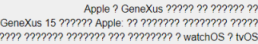
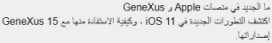

GeneXus Knowledge Bases can have many languages but only one will be the default. It is specified in the Knowledge Base Kb Language property.
Every text inserted in the Knowledge Base objects (objects descriptions, attributes descriptions, string inserted in events and rules codes, etc.) will be considered to be in this language. If the Kb Language value is Spanish and you have this line TextBlock.Caption = "日本語" (Japanese language) in an object events code, the "日本語" literal will be taken as a Spanish literal.
GeneXus Knowledge Bases are stored in a SQL Server database and saves the default language literals in this database tables, so we need to consider setting the appropriate collation in the KB database in order to support the default language characters.
The collation to a new Knowledge Base database can be set when creating it. This is very important because the database collation cannot be changed after the database is created.
Some known collations are:
| English (US) | SQL_Latin1_General_CP1_CI_AS |
| Japanese | Japanese_CI_AS |
| Chinese (PRC) | Chinese_PRC_CI_AS |
| Arabic | Arabic_CI_AS |
| Spanish | Modern_Spanish_CI_AS |
|
English (non US) |
Latin1_General_CI_AS |
For more detail check SQL Server Collation Settings.
The same issue happens if you use SQLServer for prototyping your application, make sure to use the correct collation configuration. You can manually create the database with the desired collation as follows:
CREATE DATABASE [DatabaseName] COLLATE <InsertCorrectCollationHere> GO
Then, use Create Database command to create the tables.
An application is executed and question marks are displayed instead of the correct characters. It could be on the application labels or database values.

This is a hint there is a problem with the KB Database collation or the Application database collation or UTF encoding. Review the case based on this article; once the correct collation is configured characters are correctly seen:

The following error appears when creating a KB from gxserver.
error: Invalid collation 'Latin1_General_100_CI_AS_SC_UTF8'. Failed: Create Knowledge Base
The default database collation is Latin1_General_100_CI_AS_SC_UTF8 when using SQLServer 2019/LocalDB 15 or higher since GeneXus 17 Upgrade 8. You need to install an equivalent version locally to download the KB (SAC#50653).
Working with Collations
Collation and International Terminology
International Considerations for Databases and Database Engine Applications
| Backlinks |
| RTL checklist |